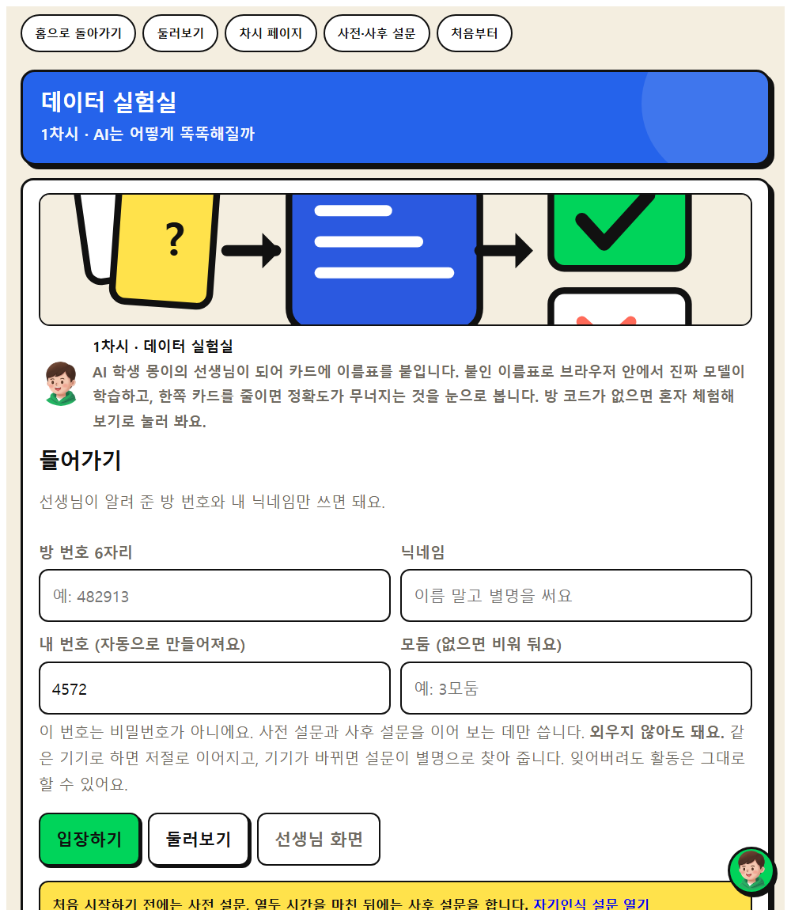
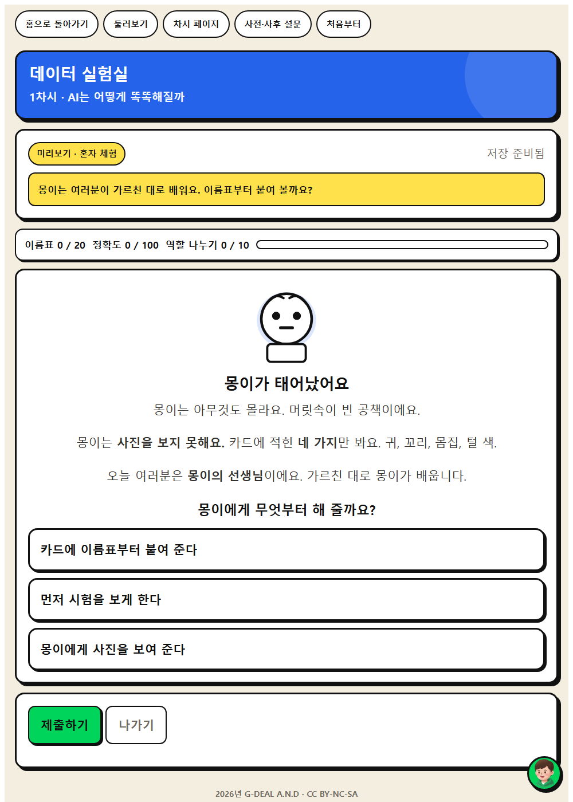
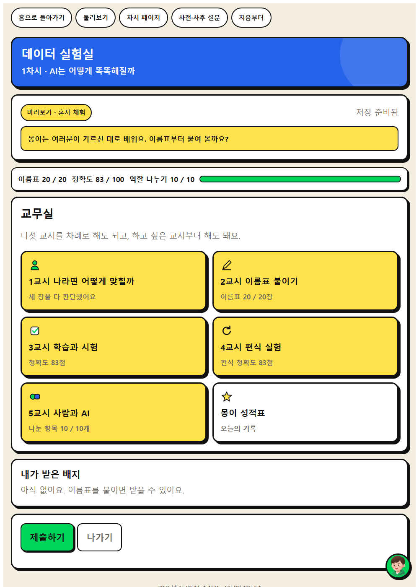
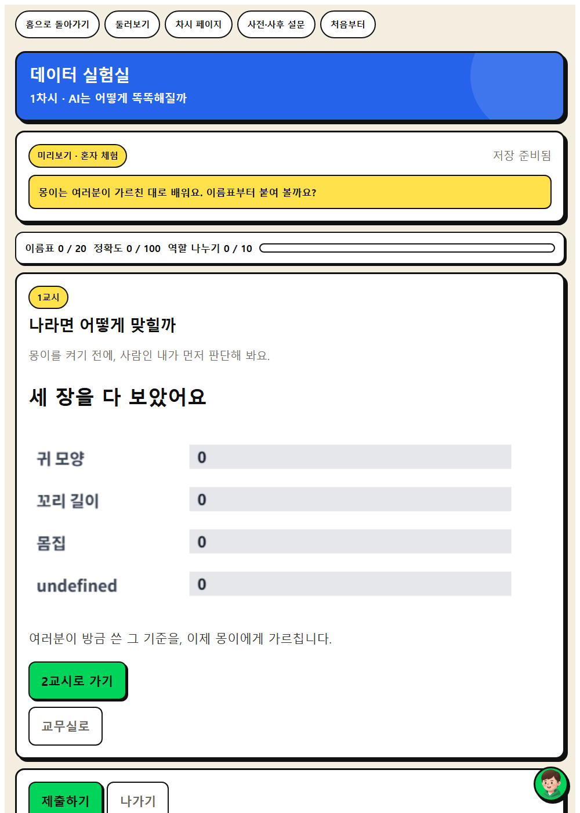
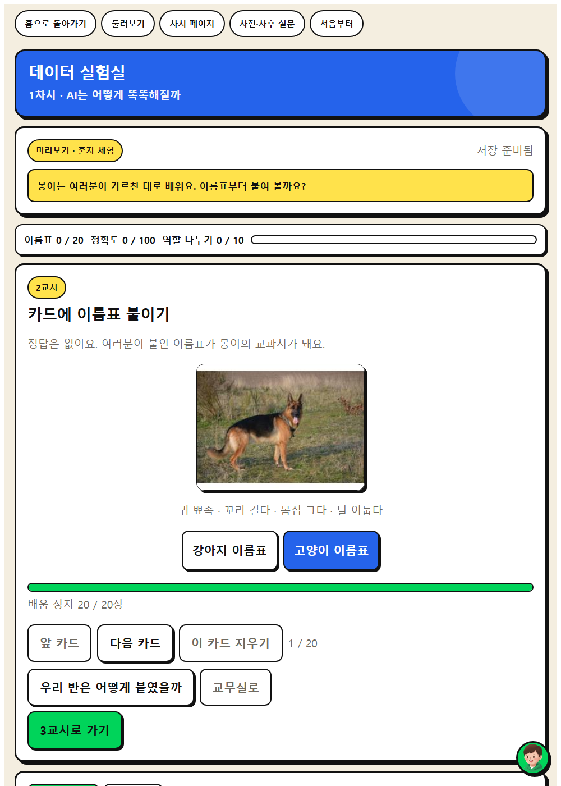
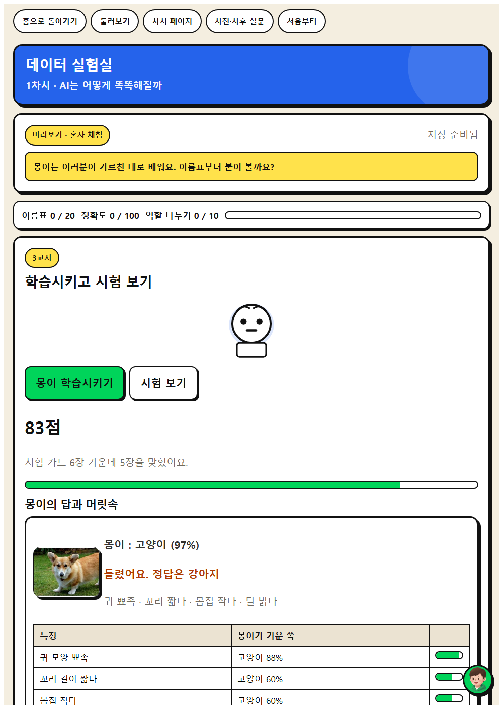
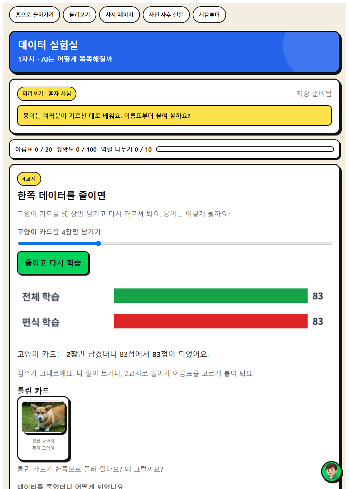
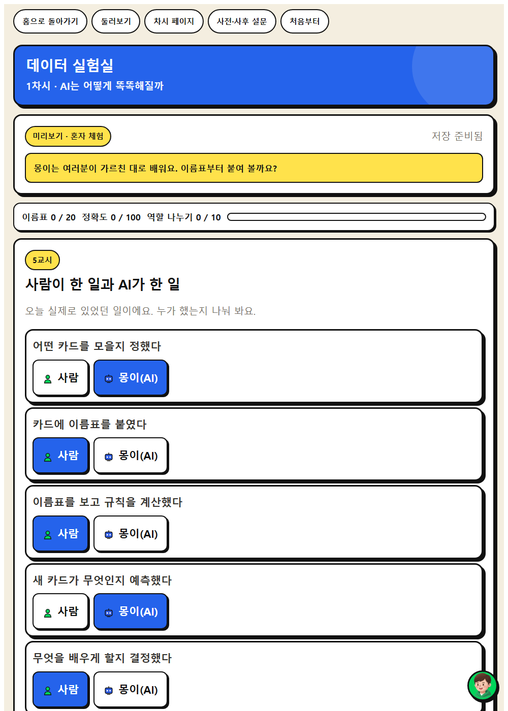

WISE 발견 · 1차시
데이터 실험실
카드에 직접 라벨을 붙여 브라우저 안의 분류기를 학습시키고, 시험 카드로 정확도를 확인한 뒤 한쪽 데이터를 줄여 다시 학습시켜 결과가 무너지는 것을 눈으로 본다.
이 앱으로 무엇을 하나
AI가 어떻게 배우는지 알아보고, AI가 우리의 생각을 도와주는지 대신해 주는지 생각해 봅시다.
비판적 사고문제해결 사고호기심
배우는 것
- 비판적 사고 · 내가 넣은 데이터에 따라 AI의 분류 결과가 어떻게 달라지는지 관찰·분석하기
- 문제해결 사고 · AI로 해결할 수 있는 문제를 찾고, 데이터를 모아 해결 절차를 구상하기
- AI적정활용 구성요소 · ⑤ 비판적 AI 리터러시와 검증 가능성
체험하는 법 (세 걸음)
- 혼자 먼저 해 본다. 앱을 열고 둘러보기를 누른다. 별명을 적지 않아도 바로 들어간다. 저장되지 않으니 마음껏 눌러 본다. 웹앱 열기
- 수업 직전에 방을 만든다. 앱에서 선생님 화면을 누르고 비밀번호 네 자리를 정한 뒤 새 방 만들기를 누른다. 여섯 자리 방 번호가 나온다. 칠판에 적는다.
- 학생이 들어온다. 같은 주소를 열어 방 번호와 별명만 넣는다. 내 번호 네 자리는 앱이 자동으로 채워 둔다. 제출하면 선생님 화면에 바로 모인다.
기기가 모자라면 모둠에 한 대로 함께 하고, 없으면 기기가 부족하면 교사 화면 하나로 함께 진행한다. 인쇄한 카드 20장에 모둠이 이름표를 붙이고, 교사가 앞에서 학습과 시험을 눌러 결과를 함께 본다.
화면 미리 보기
실제 앱 화면입니다. 눌러서 크게 볼 수 있습니다.








수업 흐름과 발문
도입 · 5분
동기 유발
동기 유발
- (동물 사진) 컴퓨터에게 강아지인지 고양이인지 물으면 정확히 맞힐 수 있을까요?
- ‘인공지능은 어떻게 배울까’ 영상을 봅시다. 컴퓨터는 누구에게 배웠을까요?
도입 · 5분
학습 문제 확인
학습 문제 확인
- AI가 어떻게 배우는지 알아보고, AI가 우리의 생각을 도와주는지 대신해 주는지 생각해 봅시다.
전개 · 30분
[활동 1] AI는 어떻게 배우는지 알아보기
[활동 1] AI는 어떻게 배우는지 알아보기
- AI에게 강아지와 고양이를 구분하게 하려면 사람이 무엇을 해 주어야 할까요?
- 머신러닝 체험 도구에 사진을 모으고 라벨을 붙여 봅시다. 이 사진을 무엇이라 부를까요?
전개 · 30분
[활동 2] 데이터로 AI 가르치기
[활동 2] 데이터로 AI 가르치기
- 모델을 학습시키고 새 사진으로 테스트해 봅시다. 한쪽 데이터를 적게 넣어 다시 학습시키면 어떻게 될까요?
- AI를 똑똑하게 만드는 것은 누구일까요?
전개 · 30분
[활동 3] AI는 도우미일까, 대신해 주는 걸까
[활동 3] AI는 도우미일까, 대신해 주는 걸까
- 사람이 한 일과 AI가 한 일을 나누어 봅시다. AI는 도와주나요, 대신해 주나요?
정리 · 5분
배움 정리
배움 정리
- 오늘 알게 된 점을 한 문장으로 말해 봅시다.
정리 · 5분
다음 차시 예고
다음 차시 예고
- 다음 시간에는 AI의 답이 늘 옳은지 확인해 봅시다.
함께 보면 좋은 자료
- 영상 머신러닝(기계학습) · Hello AI World 소프트웨어야 놀자(네이버 커넥트재단)
도입에서 2분만 보여 주고 AI가 데이터에서 규칙을 스스로 찾는다는 것을 확인한다.
- 영상 지도학습 · Hello AI World 소프트웨어야 놀자(네이버 커넥트재단)
이름표 붙이기 활동 직전에 보여 주고 정답이 붙은 데이터가 왜 필요한지 이야기한다.
- 자료 EBS 소프트웨어·인공지능 교육 (이솦)
초등용 AI 학습 콘텐츠와 수업 영상을 무료로 받을 수 있다.
- 영상 EBS AI 단추
학년별 AI 개념 영상. 도입 자료로 한두 편 골라 쓴다.
- 영상 EBS Learning 유튜브 채널
채널 안에서 차시 주제로 검색해 최신 영상을 고른다.
- 뉴스 대한민국 정책브리핑
AI 정책과 학교 현장 기사. 사실 확인이 된 자료를 인용한다.